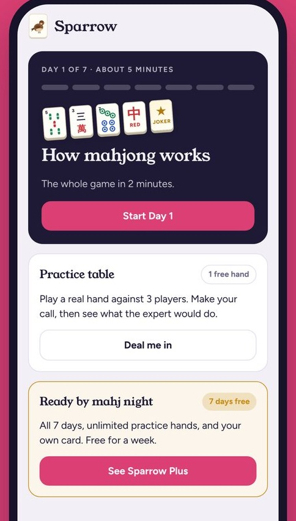

"Who's East?" What they say before the first tile.
5 lines from mahj night setup, decoded.
"Who's East?"
East is the dealer. East runs the setup and starts with 14 tiles. Everyone else gets 13.
"Roll."
East rolls two dice in the middle of the table. If one lands off the table or tilted, East rolls both again.
"Serve the wall."
East pushes the right end of their wall out at an angle so everyone can reach the tiles.
"Break it."
East counts tiles equal to the dice total, from the right end moving left, and splits the wall there. Tiles left of the break get used first.
"Dice to the corner."
East sets the dice at their right corner of the table so the next East can find them.
Walk in knowing the setup.
Practice hands in Sparrow first. Free on iOS.
